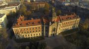

Економічний університет в Кракові
Економічний університет в Кракові (ЕУК) є сучасним вищим навчальним закладом з традиціями, започаткованими у 1925 р. ЕУК належить до найкращих економічних ВУЗів Польщі та представляє собою великий науково-дослідницький та освітній центр.
Характерною рисою університету є велика кількість предметів, що викладаються. Окрім економічних, також викладаються такі науки, як соціологія, право, історія, філософія, хімія, біологія, фізика, товарознавство, а також екологія.
Під час навчання студенти можуть брати участь у закордонному стажуванні та практиці. Університет співпрацює з багатьма закордонними ВУЗами з різних частин світу. Наші студенти мають можливість отримати подвійні дипломи - Економічного університету в Кракові та закордонного партнерського університету - французького, іспанського, німецького або українського.
Більш привабливим наш університет робить можливість отримання різних сертифікатів і професійних ліцензій. Випускникам (не лише нашого навчального закладу) пропонуємо післядипломну освіту з великим вибором спеціальностей. В університеті є також престижна освіта MBA (Master of Business Administration) i MPA (Master of Public Administration).
Репутація ЕУК, широкий спектр освіти, добре підготовлений персонал - це не все, що ми можемо запропонувати бажаючим навчатися в нашому університеті. Важливим є також те, що ми пропонуємо відмінні умови для навчання та розвитку захоплень. У нас є просторі класи для навчання, чудово обладнані лабораторії, сучасна бібліотека, басейн, спортивний зал і вражаючий кампус, котрий постійно облаштовується. У нашому університеті діє багато наукових гуртків, студентських організацій, асосоціацій і спортивних організацій. Практично не буває такого дня, коли б на території університету не відбувалося щось цікаве.
Усе це говорить про те, що навчаючись в ЕУК - університеті, який знаходиться в Кракові, найстарішому польському студентському центрі та місті повному традицій, ви збільшуєте свої шанси на досягнення професійного успіху.
У рамках академічного спортивного об'єднання (АZS) діє майже 30 спортивних секцій, серед яких, секції з футболу, волейболу, баскетболу, велосипедного спорту, альпінізму. Члени АZS можуть представляти ВНЗ на міжнародних спортивних змаганнях. Інтереси всіх студентів представляє студентський парламент, який також проводить інтеграційні заходи для студентів, благодійні заходи та інші проекти, що дозволяють урізноманітнити студентське життя.
Університет пропонує навчання I та II рівня, післядипломну освіту і навчання в аспірантурі. Крім навчання польською мовою, в університеті ведеться навчання англійською. На навчанні I рівня (бакалавр) обов'язковим є вивчення двох іноземних мов на рівні, відповідним знанням студента, підтвердженим на підставі тестування. Студент може вибирати із 6-ти іноземних мов: англійська, німецька, французька, італійська, іспанська та російська. Іноземці можуть вивчати польську мову, як один з іноземних. Завдяки діючій платформі навчання e-learning з деяких предметів можна отримувати знання через Інтернет. Інформація про заняття, консультації викладачів, іспити і матеріали, необхідні для занять, представлені у віртуальній системі Moodle, що спрощує студенту навчання.
Співпраця
Краківський Економічний Університет у Кракові співпрацює більш ніж з 200 зарубіжними вузами, міжнародними організаціями та комерційними структурами (наприклад Google, IBM, PMI, Pricewaterhouse Coopers, Elektrolux, Motorola, Shell, Nestlé, Danone і т.п.). ВНЗ приймає дуже активну участь в міжнародних програмах студентського обміну, які дозволяють студентам пройти частину навчання в партнерських ВНЗ. Університет є членом багатьох престижних міжнародних організацій, таких як NIBES (Network of International Business and Economic Schools), UNEECC (University Network of European Capitals of Culture), EUA (European University Association) і EMBS (European Management and Business Sciences).
Факти і цифри:
- 23000 студентів;
- 90000 випускників;
- подвійні дипломи з ВУЗів Франції або Німеччині;
- 1 місце в рейтингу університетів тижневика "Wprost".
Сайт:www.uek.krakow.pl/
Факультети
В Економічному університеті в Кракові є 4 факультети, які пропонують студентам більше десятка спеціальностей.
Студенти можуть навчатися на бакалавраті, який триває 3 (3,5) року, магістратурі - 2 (1,5)року, аспірантурі 3 (4) роки, або вибрати післядипломну освіту.
В Економічному університеті в Кракові функціонують такі факультети:
- Факультет Менеджменту
- Факультет Товарознавства
- Факультет Фінансів
- Факультет Економіки та Міжнародних Відносин
Процедура вступу 2015/2016
Навчання на умовах як для громадян Польщі (безкоштовне навчання)
Іноземці можуть навчатися на умовах, що зобов'язують польських громадян, якщо мають:
- дозвіл на постійне місце проживання
- громадянство однієї з держав-членів Європейського Союзу, держав-членів Європейської Асоціації Вільної Торгівлі ( EFTA) - сторін договору про Європейську Економічну Зону або Швейцарії та члени їх сімей, які мають право на постійне місце проживання
- статус емігранта, виданий Республікою Польща
- користуються тимчасовою охороною в Польщі
- статус мігруючого працівника, який не є громадянином Європейського Союзу (UE), Швейцарії, держав-членів Європейської Асоціації Вільної Торгівлі (EFTA) - сторін договору про Європейську Економічну Зону (EOG), та члени їх сімей, якщо вони проживають на території Польщі
- дозвіл на перебування довготермінового резидента Європейської Спільноти
- дозвіл на тимчасове перебування у зв'язку з обставиною, про яку йдеться в art. 127, art. 159 ust. 1 або art. 186 ust. 1 pkt 3 і 4 закону з дня 12 грудня 2013 року. про іноземців
- статус, надання додаткового захисту на території Республіки Польща
В зв'язку з впровадженням змін до закону про іноземців (art. 507), також будуть прийняті до уваги раніше видані і дійсні дозволи:
- на перебування на території Республіки Польща протягом певного часу у зв'язку з обставинами, про які йдеться в art. 53 ust. 1 pkt. 7, 13 i 14 закону з дня 12 грудня 2013 року. про іноземців (Dz.U. Nr 128, poz. 1175, z późn.zm.),
- на поселення в Польщі.
Громадяни держав-членів Європейського Союзу (UE), Швейцарії, держав-членів Європейської Асоціації Вільної Торгівлі (EFTA) - сторін договору про Європейську Економічну Зону, та члени їх сімей, які мають фінансові кошти, необхідні на покриття витрат під час навчання можуть розпочинати вищу освіту, на умовах, що зобов'язують громадян Польщі, з тим, що ці особи не мають права на стипендії соціальні, стипендії для людей з обмеженими можливостями і одноразові допомоги або на умовах, які стосуються до громадян третіх країн.
Власники дійсної Карти Поляка можуть подати заяву про прийом на навчання на умовах, що зобов'язують польських громадян, або на інших умовах, ніж для громадян Польщі. Рішення про спосіб набору необхідно прийняти перш ніж приступити до процесу вступу.
Навчання на інших умовах ніж для громадян Польщі (платне навчання)
Іноземці, які не відповідають жодній з умов, перерахованих в частині "Навчання на умовах як для громадян Польщі" можуть поступити на умовах:
- міжнародних договорів, відповідно до умов, описаних в договорах;
- договорів, підписаних між університетом та іноземними організаціями, відповідно до умов, описаних в договорах;
- рішення міністра, відповідального за вищу освіту або відповідного міністра, вказаного в статті 33 пункт 2;
- рішення ректора університету.
Ці особи можуть навчатися на таких фінансових умовах:
- як стипендіати польської сторони;
- на умовах оплати за навчання;
- без оплати за навчання та стипендій;
- як стипендіати сторони, що займається відправленням на навчання, без стягування плати за навчання;
- як стипендіати університету.
Іноземці, що мають дозвіл на проживання з позначкою "доступ до ринку праці" або Шенгенську візу або національну візу, видані в цілях здійснення трудової діяльності на території Польщі, можуть проходити магістратуру, аспірантуру і навчання в інших формах, а також брати участь у наукових дослідженнях і роботах, на платній основі. Особи ті, не можуть претендувати на соціальну стипендію, спеціальну стипендію для людей з обмеженими можливостями і одноразові допомоги.
Тип закладу: